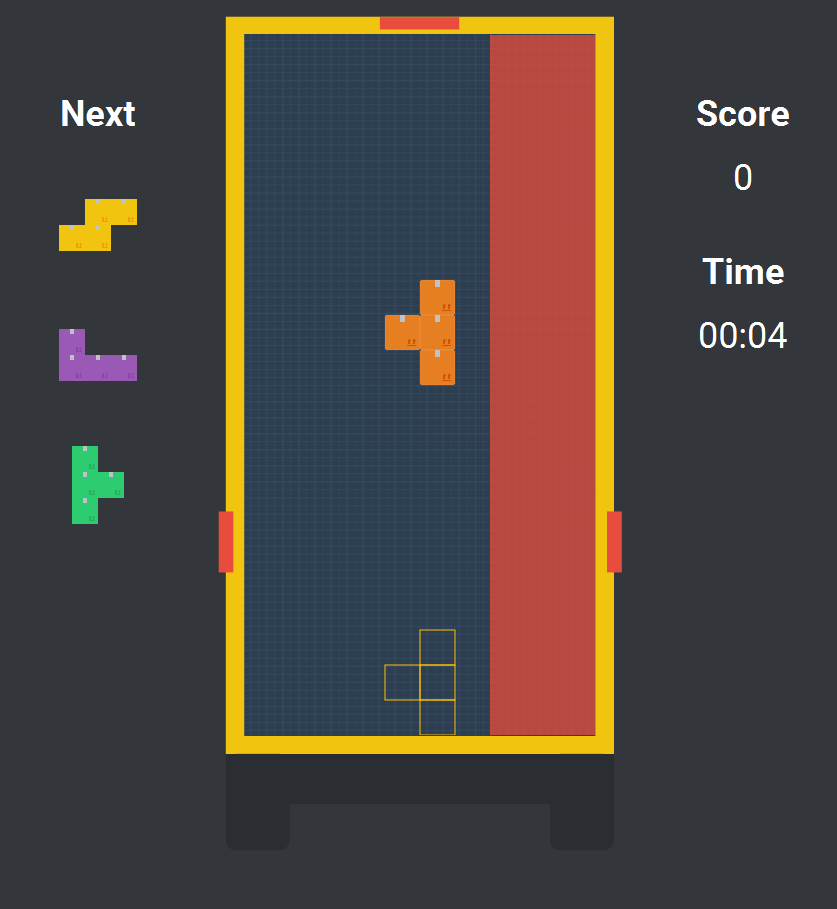
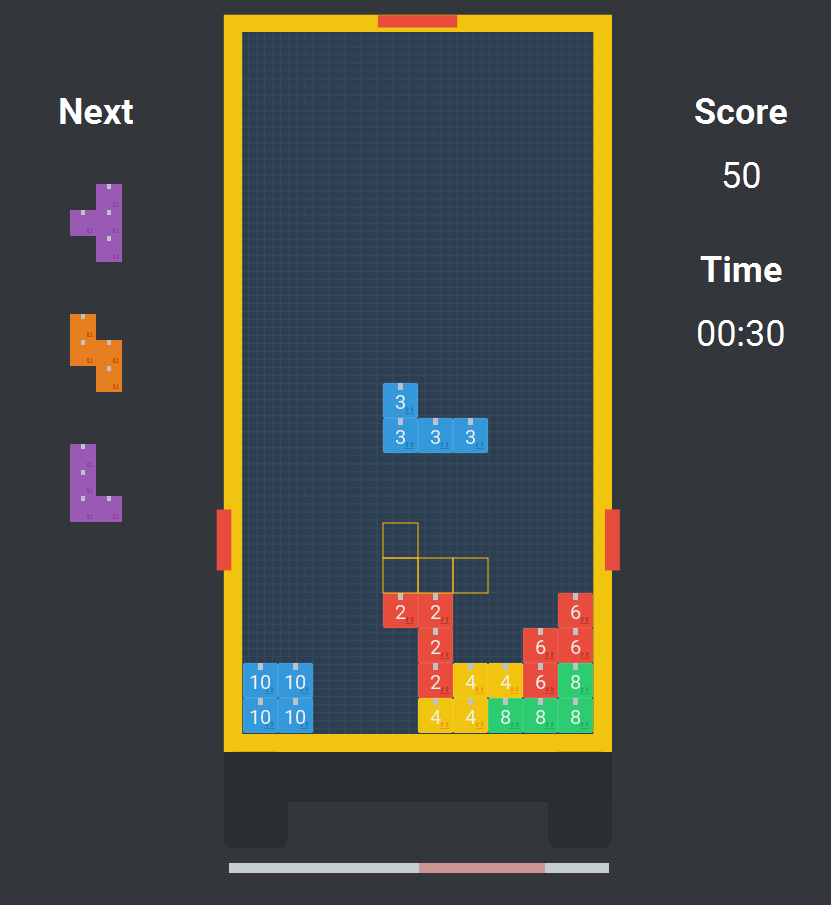

About this game:
This game was created based on the requirement of the IT-Talents Code Competition 11/2017.
The goal was to develop a Tetris-like game in a scenario around the postman.
Features
- Stunning flat design
- Scoreboard
- Different game modifications to make the game harder, than any Tetris was before
- Customizable key bindings
Additional game modes
Priority mode
Each delivery gets one of three priorities (low, normal, high) assigned.
If the delivery has a low priority only, the player has to ensure, that the delivery doesn´t land on the
priority reserved right area of the trunk.
A high-priority delivery of an eagerly customer needs to be placed on the right side of the trunk, where the
postman can hand over the package faster, since its closer to the curbside.
A delivery with a normal priority can get placed anywhere.

Balance mode
In the balance mode, each package has a specific weight. The players mission is to keep the balance of the
deliveries in the trunk in a specific range, indicated by the balance bar below the trunk.
If the trunk is too unbalanced, the deliveries would fall down and would possibly get damaged.
Customers would be unhappy if they get damaged deliveries. Post company don´t like unhappy
customers (usually).

The indicator below is greyed out, if the minimum of parcels hasn´t been reached yet. In this case the
balance is not taken into account. If there is a minimum of parcels located in the trunk and they are too
unbalanced the game is over. The balance gets calculated using the percentage difference of the left and the
right side of the trunk.